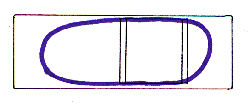
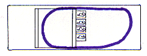
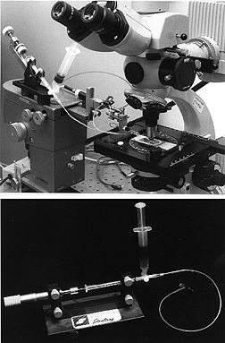

CHAPTER 5 - CELLULAR METHODS
(Source: J. Eisen)
Preparation of micropipettes
Three types of micropipettes are required for this operation, one for labeling donor embryos, one for dissecting a hole in the skin of embryos, and one for transplanting single neurons. Prepare the micropipettes for labeling donor embryos the same way as those for labeling blastomeres for lineage studies (see Blastomere Lineage Analysis). Prepare the dissecting micropipettes the same way as those used for labeling single cells with lineage tracers (see Labeling Single Cells With Lineage Tracers). Prepare the micropipettes for transplanting single cells as follows:
1. On a programmable puller, such as the Flaming Brown, use a multistage pull to make a micropipette suitable for patch clamping. It is important to use capillary glass which does not contain an internal filament, as this filament can destroy cells during the transplantation procedure.
2. While watching under a stereomicroscope, break the tip to the desired diameter, typically 10-12 µm, by pushing it lightly against the back end of a pair of forceps. The break should be clean, so that the tip surface is flat and perpendicular to the long axis of the micropipette.
3. The tip can be fire polished in a microforge, or the micropipette can be used without fire polishing the tip.
Labeling donor embryos
Label donor embryos at the 1-16 cell stage by injecting 5-10% rhodamine dextran in 0.2 M KCl into the yolk.
1. Remove embryos from their chorions (see Removing Embryos from Their Chorions, Chapter 4).
2. Place them in embryo medium in the well of a depression slide.
3. Inject rhodamine dextran into the yolk with pressure using a broken-tip micropipette, with the technique used to label individual blastomeres (see Blastomere Lineage Analysis).
4. Transfer the labeled embryos to a 1.5 cm petri dish containing embryo medium and allow them to grow to the desired stage.
Fabrication of chambers for mounting embryos
Chambers for holding embryos during transplantation can be made from microscope slides and cover slips. It is advisable to clean the slides and cover slips with microsoap before beginning.
1. Glue two 22x22 mm cover slips together, so that one extends over the other one by 1-2 mm.
2. Glue these cover slips onto a microslide so that the upper cover slip extends over the lower one and this overhang is positioned precisely at the center of the slide (see diagram).
3. When the glue dries, paint a ring of nail polish around the slide to make a water resistant area.

Chamber for cell transplantation
Agar mounting of embryos
1. Mount embryos in 1.2% agar as described in the section on Agar Mounting, Chapter 4, using Ringers solution.
2. Place a drop of Ringers over the embryo in the agar.
3. Using a fine needle, cut a wedge in the agar and remove it, so that an appropriate region of the embryo is exposed.
3. Using two fine-tipped micropipettes, make a small hole in the skin of the embryo.
4. Mount a labeled donor and an unlabeled host embryo side by side. Since many cells can be taken from one labeled embryo, it is often expedient to mount a single donor embryo and 3-4 host embryos in the same chamber.

Transplantation slide with agar-mounted embryos
Transplantation apparatus
The transplantation apparatus is a 10 µl Hamilton syringe connected to a worm gear drive or a micrometer drive. This provides very fine control of the suction and pressure required to pick up and expel cells. Fill the Hamilton syringe with light mineral oil and connect a length of mineral oil-filled polyethylene tubing to it. Attach the tubing to a pressure fitting micropipette holder (available from WPI). The holder must be firmly attached to a micromanipulator, so that the micropipette can be moved from embryo to embryo. It is also important to use a holder with a gasket that tightens by screwing the holder tip, so that the micropipette can be mounted firmly. It is useful to have a mineral oil-filled 5 ml syringe as a reservoir between the Hamilton syringe and the polyethylene tubing. This reservoir can be used for bleeding air from the system, because it is essential that the mineral oil be entirely free of air bubbles.
Fill the micropipette holder with mineral oil. Backfill the transplantation micropipette to within 5-7 mm of its shoulder with mineral oil using a 2.5 inch, 30 gauge needle, inserted into the micropipette holder. Tighten the pipette into the holder. The pressure of tightening the holder will force the mineral oil into the tip. If mineral oil is expelled from the tip at this point, equalize the pressure by creating a small amount of suction with the micrometer or worm drive.
Transplantation apparatus

Transplantation
1. Place the chamber on the stage of a compound microscope equipped with Nomarski optics and a long working distance water-immersion objective (preferably Zeiss 40xW). It is best if the microscope has a fixed stage; otherwise the transplant-ation micropipette will need to be mounted on the stage.
2. Bring the cell of interest in the donor embryo into focus.
3. Position the micropipette under the objective and suck a little of the Ringer solution into the tip. It is essential that the oil/Ringer meniscus is visible; this is an important reference point and allows the amount of suction or pressure to be monitored visually by the movement of the meniscus within the micropipette tip.
4. Once the meniscus is stabilized, move the micropipette to a position near the hole in the skin of the donor embryo, using the micromanipulator.
5. Insert the micropipette into the donor embryo and position it so that it is nearly touching the cell.
6. Suck the cell into the micropipette tip using the worm or micrometer drive.
7. Withdraw the micropipette from the donor embryo and move the chamber (this is most easily done using the stage controls) so that the micropipette is now located next to the hole in the skin of the host embryo.
8. Insert the micropipette into the appropriate position of the host embryo.
9. Expel the cell with gentle pressure, again using the worm drive or micrometer.
10. Withdraw the micropipette from the host embryo.
A word of caution, anesthetics such as tricaine (mesab; MS-222; ethyl-m-aminobenzoate methanesulphonate) will kill single cells during the transplantation procedure. Therefore, if you need to transplant cells between embryos which are twitching, rather than using an anesthetic you should use a nonmotile mutant.
Dismounting embryos
Remove embryos from the agar by gently separating the sides of the agar where it has been cut to expose a portion of the embryo (see section on Agar Mounting, Chapter 4). Move the embryos to fresh Ringer containing penicillin/ streptomycin (1% v/v pen-strep solution containing 5,000 units penicillin and 5mg streptomycin per ml in 0.9% sodium chloride in Ringer). It is essentially that the embryos be maintained in Ringer until the hole in the skin heals, or else they will fall apart.
The Zebrafish Book